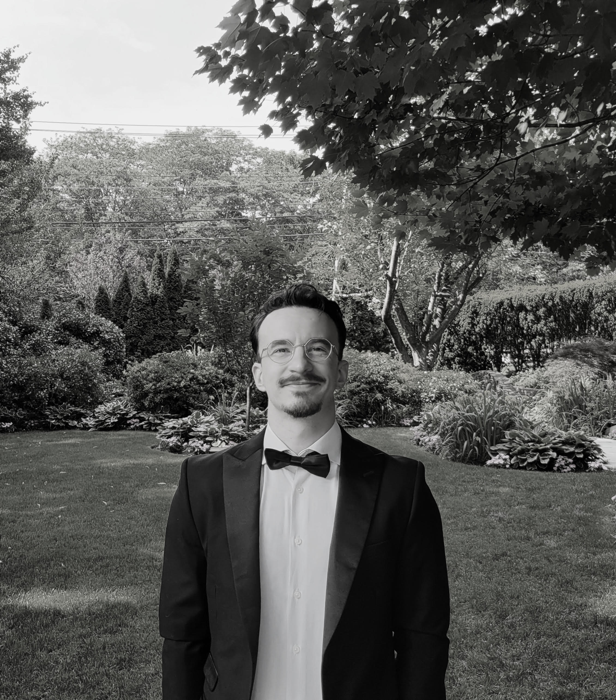

Eno Agolli
Assistant Director, Saul Kripke Center Postdoctoral Research Associate, CUNY Graduate Center
agollieno [at] gmail [dot] com

About
I have a PhD in Philosophy from Rutgers University. I have done coursework and research in philosophy at UChicago, Cambridge (UK), UConn, and Notre Dame. I am an analytic philosopher, specializing in language and logic but also highly interested in metaphysics, epistemology, and occasionally even beyond.
I was born in Albania, raised in Greece, and I now live in New York City.
Research
I care about what it means to mean. Sometimes I think of myself as a chemist, but for language. Just as a chemist wants to know the laws by which molecules come together, and don't, I want to know the laws by which meanings come together, and don't. Consider this sentence:
Eno was in Bali in September of 2026.
You have almost certainly never encountered that sentence before. Yet you almost certainly understood it immediately. Somehow, your knowledge of the meanings of its parts, together with your knowledge of how those parts are put together, allowed you to arrive at, indeed construct, a meaning for the whole.
But what exactly are the laws governing that process? For not all meanings can be put together. Consider:
More people have been to Bali than I have.
Grammatically, this looks fine. But somehow, the meanings of the individual words and phrases fail to come together into a meaningful sentence; they resist being assembled into a coherent whole.
My work asks what governs successes and failures of this kind, especially with expressions of possibility and necessity—words such as must and if. These expressions let us describe what might or must happen, what someone believes, what ought to happen, and what would happen under different circumstances. I want to know what they contribute to the sentences that contain them, and what principles constrain the ways those meanings combine.
For those in the know: my main research is in formal semantics, with connections to syntax and pragmatics. I work especially on intensional expressions—epistemic and deontic modals, propositional attitude reports, grammatical mood, conditionals, and tense—and on their interaction with reference. A central strand of my work concerns binding into intensional contexts. I develop a two-dimensional approach on which natural-language variables can range over two-dimensional individual concepts. I also develop a referential theory of conditionals, treating conditional antecedents as plural Russellian definite descriptions of possible worlds. Among other things, this gives rise to an unusual and, I think, philosophically interesting logic of conditionals.
More broadly, I am interested in the foundations and limits of semantic theory. Recently, for example, I have been thinking about the possibility of semantic akrasia: whether a speaker can judge that an expression means one thing while nevertheless continuing, in some significant sense, to mean something else by it. And of course: the good ol' semantics/pragmatics boundary.
My work also sometimes veers into neighboring areas of philosophy, especially metaphysics and metaethics. I also have a longstanding interest in non-classical logic, particularly relevance and connexive logics, and in the history of analytic philosophy, especially Frege and the early Wittgenstein (especially his theory of nonsense).
Analytic Philosophy Salon
I also run The Analytic Salon, a public-facing discussion series in New York built around a simple idea: analytic philosophy can be rigorous without being cloistered. Each session begins with a problem worth getting stuck on, usually introduced by an invited philosopher, and then opens into structured conversation with the room. We have discussed topics ranging from decision theory to metaphysics, with an emphasis on clarity, disagreement, and the pleasure of thinking together.
Misc.
I (mostly) exist outside of academia too. I’m an active poet. My first book of poetry, Ποιητικό Αίτιο (Poetic Cause), was published in April 2015 in Greece and received the Varveris Prize (2016). My second book, Παράξενα Φρούτα που Κρέμονται (Strange Fruit Hanging), was published in November 2023. A third book is in the making.
I love languages, human and otherwise. I speak Albanian, English, Modern Greek, Portuguese, Spanish, and French at an intermediate level or higher. I can read Ancient Greek, and can understand some very basic Arabic and Norwegian. I’m also learning how to code in Python and CSS/HTML.
I love hiking, good wine, the New Yorker, volleyball, and jazz.
Are you a student?
I’ve been a philosophy student for most of my life. It was tough much of the time, mainly because I had no guidance and had to figure it out mostly on my own—from whether to study philosophy, to how to do philosophy, to how to craft a successful application for philosophy grad school. I want to give back some of what I learned.
If you are a student—in high school, college, or graduate school—feel free to email me. I can offer general advice, read a personal statement, and give feedback on a writing sample. I have transferred across three PhD programs, so I can also help with that.